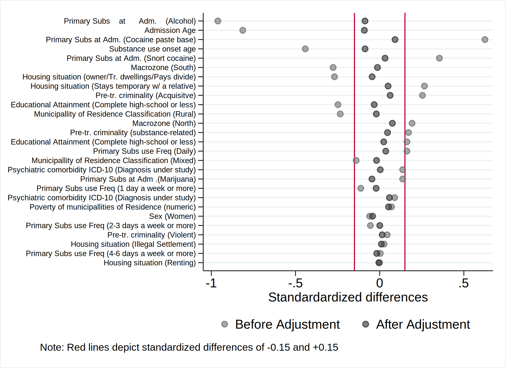

. clear all
. cap noi which tabout
C:\Users\CISS Fondecyt\ado\plus\t\tabout.ado
*! 2.0.8 Ian Watson 15mar2019
*! tabout version 3 (beta) available at: http://tabout.net.au
. if _rc==111 {
. cap noi ssc install tabout
. }
. cap noi which pathutil
C:\Users\CISS Fondecyt\ado\plus\p\pathutil.ado
*! version 2.2.0 19nov2020 daniel klein
. if _rc==111 {
. cap noi net install pathutil, from("http://fmwww.bc.edu/repec/bocode/p/")
. }
. cap noi which pathutil
C:\Users\CISS Fondecyt\ado\plus\p\pathutil.ado
*! version 2.2.0 19nov2020 daniel klein
. if _rc==111 {
. ssc install dirtools
. }
. cap noi which project
C:\Users\CISS Fondecyt\ado\plus\p\project.ado
*! version 1.3.1 22dec2013 picard@netbox.com
. if _rc==111 {
. ssc install project
. }
. cap noi which stipw
C:\Users\CISS Fondecyt\ado\plus\s\stipw.ado
*! Version 1.0.0 17Jan2022
. if _rc==111 {
. ssc install stipw
. }
. cap noi which stpm2
C:\Users\CISS Fondecyt\ado\plus\s\stpm2.ado
*! version 1.7.5 May2021
. if _rc==111 {
. ssc install stpm2
. }
. cap noi which rcsgen
C:\Users\CISS Fondecyt\ado\plus\r\rcsgen.ado
*! version 1.5.9 13FEB2022
. if _rc==111 {
. ssc install rcsgen
. }
. cap noi which matselrc
C:\Users\CISS Fondecyt\ado\plus\m\matselrc.ado
*! NJC 1.1.0 20 Apr 2000 (STB-56: dm79)
. if _rc==111 {
. cap noi net install dm79, from(http://www.stata.com/stb/stb56)
. }
. cap noi which pbalchk
C:\Users\CISS Fondecyt\ado\plus\p\pbalchk.ado
*! Version: 3.0.0
*! Author: Mark Lunt
*! Date: October 2, 2017 @ 12:47:35
. if _rc==111 {
. cap noi net install pbalchk from("http://personalpages.manchester.ac.uk/staff/mark.lunt/")
. }
. cap noi which matselrc
C:\Users\CISS Fondecyt\ado\plus\m\matselrc.ado
*! NJC 1.1.0 20 Apr 2000 (STB-56: dm79)
. if _rc==111 {
. ssc install matselrc
. }
.
Date created: 18:27:23 1 Aug 2023.
Get the folder
C:\Users\CISS Fondecyt\Mi unidad\Alvacast\SISTRAT 2022 (github)
Fecha: 1 Aug 2023, considerando un SO Windows para el usuario: CISS Fondecyt
Path data= ;
Tiempo: 1 Aug 2023, considerando un SO Windows
The file is located and named as: C:\Users\CISS Fondecyt\Mi unidad\Alvacast\SISTRAT 2022 (github)fiscalia_mariel_jan_2023_match_SENDA.dta
=============================================================================
=============================================================================
We open the files
. use "an_grant_23_24_miss.dta", clear
. encode escolaridad_rec, gen(esc_rec)
. encode sex, generate(sex_enc)
. encode sus_principal_mod, gen(sus_prin_mod)
. encode freq_cons_sus_prin, gen(fr_sus_prin)
. encode compromiso_biopsicosocial, gen(comp_biosoc)
. encode tenencia_de_la_vivienda_mod, gen(ten_viv)
. *encode dg_cie_10_rec, generate(dg_cie_10_mental_h) *already numeric
. encode dg_trs_cons_sus_or, generate(sud_severity_icd10)
. encode macrozona, generate(macrozone)
.
. recode policonsumo (0=0 "No polysubstance use") (1=1 "Polysubstance use"), gen(poly)
(0 differences between policonsumo and poly)
.
. lab var poly "Polysubstance use"
.
. *rename Clasificación clas
. *encode Clasificación, gen(clas)
. *drop Clasificación
.
. gen clas = 0
. replace clas = 1 if strpos(clasificacion,"Mixta")>0
(8,205 real changes made)
. replace clas = 2 if strpos(clasificacion,"Rural")>0
(7,148 real changes made)
. recode clas (0=0 "Urban") (1=1 "Mixed") (2=2 "Rural"), gen(clas2)
(0 differences between clas and clas2)
. drop clas
.
. rename clas2 clas
.
. lab var clas "Classification of Municipallities of Residence into Rural-Urban"
. lab var offender_d "Offenders (proxy of event; missing not event)"
.
. lab var porc_pobr "Poverty of municipallities of Residence (numeric)"
. lab var comuna_residencia_cod_rec "Municipallity of Residence (code)"
.
. drop clasificacion
.
. *región
. format comuna_residencia_cod_rec
variable name display format
-----------------------------------------
comuna_residencia_cod_rec %-9s
-----------------------------------------
. gen comuna_residencia_cod_rec_num = real(comuna_residencia_cod_rec)
(2 missing values generated)
. gen comuna_residencia_cod_rec_str = string(comuna_residencia_cod_rec_num ,"%05.0f")
.
. gen region=substr(comuna_residencia_cod_rec_str, 1,2)
. gen region_num = real(region)
(2 missing values generated)
.
. drop comuna_residencia_cod_rec_num
.
. lab var comuna_residencia_cod_rec "Municipallity of Residence (code)"
. lab var region "Region"
. lab var region_num "Region (numeric)"
. lab var age_at_censor_date "Age at censorship date (2019-11-13)"
.
. lab var event_offense "Offense after admission"
. lab var event_dropout "Dropout after admission"
variable event_dropout not found
r(111);
.
.
. /*
> label define country1 1 "Ukraine" 2 "Bulgaria" 3 "Georgia" 4 "Russia" 5 "Lithuania" 6 "Czech Republic" ///
> 7 "Hungary" 8 "Slovakia" 9 "Portugal" 10 "Croatia" 11 "Ireland" 12 "Estonia" 13 "France" 14 "Cyprus" ///
> 15 "Poland" 16 "Germany" 17 "Great Britain" 18 "Slovenia" 19 "Israel" 20 "Spain" 21 "Belgium" ///
> 22 "Netherlands" 23 "Switzerland" 24 "Sweden" 25 "Norway" 26 "Denmark" 27 "Finland"
> label values country country1
> */
.
Then we set the data base in surirval format and bring the urban-rural classification of municipallities from this link.
===================================================================================
===================================================================================
. *si no está perdido cod_region, significa que hubo un registro (0/1) y el tiempo es el tiempo desde
. *set the indicator
.
.
. //id in numeric format
. *encode hash_key, gen(id)
. *gen id= encode(hash_key)
. egen long id = group(hash_key)
. lab var id "HASH (numeric)"
.
. //Sort variables
. order id hash_key time_to_drop_from_adm event_dropout time_to_off_from_adm event_offense edad_al_ing_1 age_dropout_imp age_offending_imp
variable event_dropout not found
r(111);
We show a table of missing values
. misstable sum poly sus_prin_mod fr_sus_prin edad_al_ing_1 edad_ini_cons sex_enc esc_rec ten_viv dg_cie_10_rec n_off_vio n_off_acq n_off_sud clas porc_pobr macrozone
Obs<.
+------------------------------
| | Unique
Variable | Obs=. Obs>. Obs<. | values Min Max
-------------+--------------------------------+------------------------------
sus_prin_mod | 1 85,047 | 5 1 5
fr_sus_prin | 421 84,627 | 5 1 5
edad_al_in~1 | 7 85,041 | >500 10.28493 88.83836
edad_ini_c~s | 6,592 78,456 | 68 5 74
esc_rec | 384 84,664 | 3 1 3
ten_viv | 4,679 80,369 | 5 1 5
porc_pobr | 2 85,046 | >500 .0003295 .6363748
macrozone | 20 85,028 | 3 1 3
-----------------------------------------------------------------------------
And missing patterns
. misstable pat poly sus_prin_mod fr_sus_prin edad_al_ing_1 edad_ini_cons sex_enc esc_rec ten_viv dg_cie_10_rec n_off_vio n_off_acq n_off_sud clas porc_pobr macrozone
Missing-value patterns
(1 means complete)
| Pattern
Percent | 1 2 3 4 5 6 7 8
------------+---------------------------
87% | 1 1 1 1 1 1 1 1
|
7 | 1 1 1 1 1 1 1 0
5 | 1 1 1 1 1 1 0 1
<1 | 1 1 1 1 1 1 0 0
<1 | 1 1 1 1 1 0 1 1
<1 | 1 1 1 1 0 1 1 1
<1 | 1 1 1 1 1 0 0 1
<1 | 1 1 1 1 0 1 1 0
<1 | 1 1 1 1 0 1 0 1
<1 | 1 1 1 1 1 0 1 0
<1 | 1 1 1 1 1 0 0 0
<1 | 1 1 1 1 0 1 0 0
<1 | 1 1 1 0 1 1 0 1
<1 | 1 1 0 1 1 1 1 0
<1 | 1 1 1 0 1 1 1 0
<1 | 1 1 1 0 1 1 1 1
<1 | 1 0 1 1 1 1 1 1
<1 | 1 1 1 1 0 0 0 1
<1 | 1 1 1 1 0 0 1 1
<1 | 0 1 1 1 0 0 0 0
<1 | 1 1 0 0 1 1 1 0
<1 | 1 1 1 0 1 1 0 0
<1 | 1 1 1 1 0 0 0 0
<1 | 1 1 1 1 0 0 1 0
------------+---------------------------
100% |
Variables are (1) sus_prin_mod (2) porc_pobr (3) edad_al_ing_1 (4) macrozone (5) esc_rec (6) fr_sus_prin (7) ten_viv (8) edad_ini_cons
86% of patients showed complete data, and 2% had missing data due to tenure status of the household and age of onset of substance use.
=======================================
=======================================
Time to tr. completion
. *comp contact_js
. *stset edad_al_egres_imp, enter(edad_al_ing_1_mod) failure(comp==1) //*scale(12)
. cap drop _st
. cap drop _d
. cap drop _t
. cap drop _t0
. cap drop _start
.
. cap gen _start= 0
. stset time_to_off_from_adm, enter(_start) failure(event_offense==1) //*scale(12)
failure event: event_offense == 1
obs. time interval: (0, time_to_off_from_adm]
enter on or after: time _start
exit on or before: failure
------------------------------------------------------------------------------
85,048 total observations
7 event time missing (time_to_off_from_adm>=.) PROBABLE ERROR
------------------------------------------------------------------------------
85,041 observations remaining, representing
27,725 failures in single-record/single-failure data
289,405.39 total analysis time at risk and under observation
at risk from t = 0
earliest observed entry t = 0
last observed exit t = 12.57176
.
. stsum, by (poly)
failure _d: event_offense == 1
analysis time _t: time_to_off_from_adm
enter on or after: time _start
| Incidence Number of |------ Survival time -----|
poly | Time at risk rate subjects 25% 50% 75%
---------+---------------------------------------------------------------------
No polys | 72,527.6473 .0640445 22550 4.615456 . .
Polysubs | 216,877.744 .1064194 62491 1.896742 8.93254 .
---------+---------------------------------------------------------------------
Total | 289,405.391 .0957999 85041 2.264536 . .
. *https://www.statalist.org/forums/forum/general-stata-discussion/general/1635683-stata-stir-command-with-pweights
. poisson _d i.poly , irr exposure(_t) vce(rob)
Iteration 0: log pseudolikelihood = -90851.829
Iteration 1: log pseudolikelihood = -90851.829
Poisson regression Number of obs = 85,041
Wald chi2(1) = 896.12
Prob > chi2 = 0.0000
Log pseudolikelihood = -90851.829 Pseudo R2 = 0.0061
------------------------------------------------------------------------------------
| Robust
_d | IRR Std. Err. z P>|z| [95% Conf. Interval]
-------------------+----------------------------------------------------------------
poly |
Polysubstance use | 1.661647 .0281875 29.94 0.000 1.607309 1.717822
_cons | .0640445 .0009823 -179.17 0.000 .0621479 .0659991
ln(_t) | 1 (exposure)
------------------------------------------------------------------------------------
Note: _cons estimates baseline incidence rate.
. matrix pois_irr_t0_nowgt= r(table)
. *matselrc pois_ir_t0_nowgt pois_ir_t0_nowgt, c(1/1) r(1, 5/6)
.
. margins i.poly, predict(ir)
Adjusted predictions Number of obs = 85,041
Model VCE : Robust
Expression : Predicted incidence rate, predict(ir)
---------------------------------------------------------------------------------------
| Delta-method
| Margin Std. Err. z P>|z| [95% Conf. Interval]
----------------------+----------------------------------------------------------------
poly |
No polysubstance use | .0640445 .0009823 65.20 0.000 .0621192 .0659699
Polysubstance use | .1064194 .0007711 138.00 0.000 .104908 .1079308
---------------------------------------------------------------------------------------
. matrix pois_ir_t0_nowgt= r(table)
. *matselrc pois_ir_t0_nowgt pois_ir_t0_nowgt, c(1/2) r(1, 5/6)
.
. //IR for no PSU, from mat ir
. scalar ir_poly_00= string(`=scalar(round(pois_ir_t0_nowgt[1,1]*1000,.01))',"%9.2f")+" (95%CI: "+string(`=scalar(round(pois_ir_t0_nowgt[5,1]*1000,.01))',"%9.2f")+", "+string(
> `=scalar(round(pois_ir_t0_nowgt[6,1]*1000,.01))',"%9.2f")+")"
. //IR for PSU, from mat ir
. scalar ir_poly_11= string(`=scalar(round(pois_ir_t0_nowgt[1,2]*1000,.01))',"%9.2f")+" (95%CI: "+string(`=scalar(round(pois_ir_t0_nowgt[5,2]*1000,.01))',"%9.2f")+", "+string(
> `=scalar(round(pois_ir_t0_nowgt[6,2]*1000,.01))',"%9.2f")+")"
. //IRR for PSU, from mat irr (no * 1000)
. scalar irr_poly01= string(`=scalar(round(pois_irr_t0_nowgt[1,2],.01))',"%9.2f")+" (95%CI: "+string(`=scalar(round(pois_irr_t0_nowgt[5,2],.01))',"%9.2f")+", "+string(`=scalar
> (round(pois_irr_t0_nowgt[6,2],.01))',"%9.2f")+")"
. *set trace on //string(exp(`m_m9'),"%9.2f")+
. cap noi qui sts test poly, logrank
. scalar logrank_chi= string(round(r(chi2),.01),"%9.2f")
. scalar logrank_df= r(df)
. scalar logrank_p= round(chiprob(r(df),r(chi2)),.001) // round(chiprob(r(df),r(chi2)),.001)
. local lr1: di %3.2f logrank_chi
. local lr2: di %1.0f logrank_df
. local lr3: di %5.4f logrank_p
. scalar logrank_nowgt= " Chi^2(`lr2')=`lr1',p=`lr3'"
. *di logrank_nowgt
.
. matrix comb_irs = (0 \ 0 \ 0 \ 0)
. matrix colnames comb_irs = "Tr.comp-no weight"
. matrix rownames comb_irs = "No PSU: `=scalar(ir_poly_00)'" "PSU: `=scalar(ir_poly_11)'" "IRR: `=scalar(irr_poly01)'" "Logrank: `=scalar(logrank_nowgt)'"
. esttab matrix(comb_irs) using "irrs_t0_nowgt_tr_comp_jul_2023.html", replace
(output written to irrs_t0_nowgt_tr_comp_jul_2023.html)
. *set trace off
| comb_irs | |
| Tr.comp-no weight | |
| No PSU | |
| 64.04 (95%CI: 62.12, 65.97) | 0 |
| PSU | |
| 106.42 (95%CI: 104.91, 107.93) | 0 |
| IRR | |
| 1.66 (95%CI: 1.61, 1.72) | 0 |
| Logrank | |
| Chi^2(1)=1299.25,p=0.0000 | 0 |
We calculated the inverse probability weights
. *https://www.statalist.org/forums/forum/general-stata-discussion/general/1600895-survival-model-stpm2-using-previously-estimated-weights
. *pweights are Stata’s sampling weights—the inverse of the probability that the subject was chosen from the population.
.
. stipw (logit poly sus_prin_mod fr_sus_prin edad_al_ing_1 edad_ini_cons sex_enc esc_rec ten_viv dg_cie_10_rec n_off_vio n_off_acq n_off_sud clas porc_pobr macrozone), distrib
> ution(weibull) ipwtype(stabilised) vce(robust) genweight(ipw_wgt) //*edad_al_ing_1 df(10) ten_viv colinealidad
11213 observations have missing treatment and/or missing confounder values and/or _st = 0.
These observations are excluded from the analysis, see variable _stipw_flag
Fitting logistic regression to obtain denominator for weights
Iteration 0: log likelihood = -43293.384
Iteration 1: log likelihood = -36271.043
Iteration 2: log likelihood = -36003.21
Iteration 3: log likelihood = -36002.775
Iteration 4: log likelihood = -36002.775
Fitting second logistic regression with no confounders to obtain numerator for stabilised weights
Iteration 0: log likelihood = -43293.384
Iteration 1: log likelihood = -43293.384
Fitting weighted survival model to obtain point estimates
failure _d: event_offense == 1
analysis time _t: time_to_off_from_adm
enter on or after: time _start
weight: [pweight=ipw_wgt]
Fitting constant-only model:
Iteration 0: log pseudolikelihood = -77888.011
Iteration 1: log pseudolikelihood = -76308.645
Iteration 2: log pseudolikelihood = -76290.353
Iteration 3: log pseudolikelihood = -76290.35
Fitting full model:
Iteration 0: log pseudolikelihood = -76290.35
Iteration 1: log pseudolikelihood = -76282.337
Iteration 2: log pseudolikelihood = -76282.335
Displaying weighted survival model with Robust standard errors
Weibull PH regression Number of obs = 73,835
Wald chi2(1) = 6.86
Log pseudolikelihood = -76282.335 Prob > chi2 = 0.0088
------------------------------------------------------------------------------
| Robust
_t | Haz. Ratio Std. Err. z P>|z| [95% Conf. Interval]
-------------+----------------------------------------------------------------
poly | 1.061262 .0240916 2.62 0.009 1.015078 1.109546
_cons | .1323391 .0028584 -93.63 0.000 .1268536 .1380617
-------------+----------------------------------------------------------------
/ln_p | -.3055842 .005994 -50.98 0.000 -.3173322 -.2938361
-------------+----------------------------------------------------------------
p | .7366929 .0044157 .7280888 .7453987
1/p | 1.357418 .0081364 1.341564 1.373459
------------------------------------------------------------------------------
Note: _cons estimates baseline hazard.
We calculated the incidence rate.
. cap drop _st
. cap drop _d
. cap drop _t
. cap drop _t0
. cap drop _start
.
. cap gen _start= 0
. stset time_to_off_from_adm [pw=ipw_wgt], enter(_start) failure(event_offense==1) //*scale(12)
failure event: event_offense == 1
obs. time interval: (0, time_to_off_from_adm]
enter on or after: time _start
exit on or before: failure
weight: [pweight=ipw_wgt]
------------------------------------------------------------------------------
85,048 total observations
7 event time missing (time_to_off_from_adm>=.) PROBABLE ERROR
11,206 weights invalid PROBABLE ERROR
------------------------------------------------------------------------------
73,835 observations remaining, representing
22,617 failures in single-record/single-failure data
235,931.53 total analysis time at risk and under observation
at risk from t = 0
earliest observed entry t = 0
last observed exit t = 11.91507
.
. stsum, by (poly)
failure _d: event_offense == 1
analysis time _t: time_to_off_from_adm
enter on or after: time _start
weight: [pweight=ipw_wgt]
| Incidence Number of |------ Survival time -----|
poly | Time at risk rate subjects 25% 50% 75%
---------+---------------------------------------------------------------------
No polys | 65,456.2345 .0931461 21945.88 2.634604 . .
Polysubs | 179,512.549 .0955865 53457.46 2.291632 . .
---------+---------------------------------------------------------------------
Total | 244,968.784 .0949344 75403.34 2.367457 . .
Given the possible errors pointed out by stata in the weights, we calculated the IPW manually
. cap qui noi frame drop example_a
frame example_a not found
. frame copy default example_a
. frame example_a: logistic poly i.sus_prin_mod i.fr_sus_prin edad_al_ing_1 edad_ini_cons i.sex_enc i.esc_rec i.ten_viv i.dg_cie_10_rec i.n_off_vio i.n_off_acq i.n_off_sud i.c
> las porc_pobr i.macrozone, nolog
Logistic regression Number of obs = 73,835
LR chi2(27) = 17112.68
Prob > chi2 = 0.0000
Log likelihood = -34737.046 Pseudo R2 = 0.1976
-------------------------------------------------------------------------------------------------------------
poly | Odds Ratio Std. Err. z P>|z| [95% Conf. Interval]
--------------------------------------------+----------------------------------------------------------------
sus_prin_mod |
Cocaine hydrochloride | 4.290258 .1252687 49.88 0.000 4.051629 4.542942
Cocaine paste | 3.842627 .0957475 54.03 0.000 3.659474 4.034946
Marijuana | 2.352174 .1006072 20.00 0.000 2.163026 2.557861
Other | 2.474297 .1759361 12.74 0.000 2.152418 2.84431
|
fr_sus_prin |
2 to 3 days a week | 1.370427 .052316 8.25 0.000 1.271632 1.476898
4 to 6 days a week | 1.341233 .0553693 7.11 0.000 1.236985 1.454266
Daily | 1.486416 .0559183 10.54 0.000 1.380761 1.600156
Less than 1 day a week | .8282231 .0432295 -3.61 0.000 .7476846 .9174369
|
edad_al_ing_1 | .9638451 .0009433 -37.63 0.000 .9619982 .9656956
edad_ini_cons | .9484293 .0016648 -30.16 0.000 .945172 .9516978
|
sex_enc |
Women | .8363717 .0191109 -7.82 0.000 .7997413 .8746798
|
esc_rec |
2-Completed high school or less | .8011382 .0216729 -8.20 0.000 .7597667 .8447625
3-Completed primary school or less | .618291 .018456 -16.11 0.000 .5831557 .6555433
|
ten_viv |
Others | .8631246 .0937166 -1.36 0.175 .6976723 1.067814
Owner/Transferred dwellings/Pays Dividends | .8034975 .0750484 -2.34 0.019 .6690838 .9649139
Renting | .9283818 .0879633 -0.78 0.433 .7710385 1.117834
Stays temporarily with a relative | .9880995 .0923691 -0.13 0.898 .8226764 1.186786
|
dg_cie_10_rec |
Diagnosis unknown (under study) | 1.226239 .0335045 7.46 0.000 1.162299 1.293697
With psychiatric comorbidity | 1.458974 .030977 17.79 0.000 1.399506 1.520968
|
n_off_vio |
1 | 1.010805 .026529 0.41 0.682 .9601235 1.064161
|
n_off_acq |
1 | 1.209861 .0339053 6.80 0.000 1.1452 1.278173
|
n_off_sud |
1 | 1.110935 .0298604 3.91 0.000 1.053925 1.17103
|
clas |
Mixed | .6404669 .0197541 -14.45 0.000 .6028966 .6803784
Rural | .5158884 .0171422 -19.92 0.000 .4833609 .5506048
|
porc_pobr | 16.49116 2.365287 19.54 0.000 12.44989 21.84424
|
macrozone |
North | 1.571658 .0491534 14.46 0.000 1.478212 1.67101
South | .8444963 .0256582 -5.56 0.000 .7956751 .896313
|
_cons | 8.38815 .9470158 18.84 0.000 6.723047 10.46565
-------------------------------------------------------------------------------------------------------------
Note: _cons estimates baseline odds.
.
. frame example_a: predict double ps //ps = propensity score
(option pr assumed; Pr(poly))
(11,213 missing values generated)
.
. frame example_a: gen double HAW = ((poly == 1) / ps) + ((poly == 0) / (1 - ps)) //
(11,213 missing values generated)
. *Compute the inverse probability Treatment weights (IPTW)
. frame example_a: summarize HAW, detail
HAW
-------------------------------------------------------------
Percentiles Smallest
1% 1.044342 1.010117
5% 1.064793 1.010902
10% 1.080171 1.013557 Obs 73,835
25% 1.123153 1.014552 Sum of Wgt. 73,835
50% 1.259286 Mean 2.036245
Largest Std. Dev. 2.294315
75% 1.799306 40.71928
90% 3.326556 41.69675 Variance 5.263881
95% 6.545816 53.94726 Skewness 5.015346
99% 12.60029 73.19824 Kurtosis 46.20905
. *keep if inrange(HAW, r(p05), r(p95))
. frame example_a: keep if inrange(HAW, r(p1), r(p99)) //2023-01-08
(12,689 observations deleted)
.
. frame example_a: cap drop _st
. frame example_a: cap drop _d
. frame example_a: cap drop _t
. frame example_a: cap drop _t0
. frame example_a: cap drop _start
.
. frame example_a: cap gen _start= 0
. frame example_a: stset time_to_off_from_adm [pw=HAW], enter(_start) failure(event_offense==1) //*scale(12)
failure event: event_offense == 1
obs. time interval: (0, time_to_off_from_adm]
enter on or after: time _start
exit on or before: failure
weight: [pweight=HAW]
------------------------------------------------------------------------------
72,359 total observations
0 exclusions
------------------------------------------------------------------------------
72,359 observations remaining, representing
21,803 failures in single-record/single-failure data
231,732.39 total analysis time at risk and under observation
at risk from t = 0
earliest observed entry t = 0
last observed exit t = 11.91507
.
. frame example_a: stsum, by (poly)
failure _d: event_offense == 1
analysis time _t: time_to_off_from_adm
enter on or after: time _start
weight: [pweight=HAW]
| Incidence Number of |------ Survival time -----|
poly | Time at risk rate subjects 25% 50% 75%
---------+---------------------------------------------------------------------
No polys | 194,452.719 .0845156 65016.21 3.102825 . .
Polysubs | 242,518.278 .0948155 72331.4 2.330685 . .
---------+---------------------------------------------------------------------
Total | 436,970.996 .090232 137347.6 2.636194 . .
. frame change example_a
. poisson _d i.poly [pw=HAW], irr exposure(_t) vce(rob)
Iteration 0: log pseudolikelihood = -133573.92
Iteration 1: log pseudolikelihood = -133573.92
Poisson regression Number of obs = 72,359
Wald chi2(1) = 26.02
Log pseudolikelihood = -133573.92 Prob > chi2 = 0.0000
------------------------------------------------------------------------------------
| Robust
_d | IRR Std. Err. z P>|z| [95% Conf. Interval]
-------------------+----------------------------------------------------------------
poly |
Polysubstance use | 1.12187 .0252924 5.10 0.000 1.073377 1.172553
_cons | .0845156 .0017545 -119.02 0.000 .081146 .0880252
ln(_t) | 1 (exposure)
------------------------------------------------------------------------------------
Note: _cons estimates baseline incidence rate.
. matrix pois_irr_t0_wgt= r(table)
. *matselrc pois_ir_t0_nowgt pois_ir_t0_nowgt, c(1/1) r(1, 5/6)
.
. margins i.poly, predict(ir)
Adjusted predictions Number of obs = 72,359
Model VCE : Robust
Expression : Predicted incidence rate, predict(ir)
---------------------------------------------------------------------------------------
| Delta-method
| Margin Std. Err. z P>|z| [95% Conf. Interval]
----------------------+----------------------------------------------------------------
poly |
No polysubstance use | .0845156 .0017545 48.17 0.000 .0810769 .0879543
Polysubstance use | .0948155 .0008338 113.72 0.000 .0931813 .0964497
---------------------------------------------------------------------------------------
. matrix pois_ir_t0_wgt= r(table)
.
. //IR for no PSU, from mat ir
. scalar ir_poly_001= string(`=scalar(round(pois_ir_t0_wgt[1,1]*1000,.01))',"%9.2f")+" (95%CI: "+string(`=scalar(round(pois_ir_t0_wgt[5,1]*1000,.01))',"%9.2f")+", "+string(`=s
> calar(round(pois_ir_t0_wgt[6,1]*1000,.01))',"%9.2f")+")"
. //IR for PSU, from mat ir
. scalar ir_poly_111= string(`=scalar(round(pois_ir_t0_wgt[1,2]*1000,.01))',"%9.2f")+" (95%CI: "+string(`=scalar(round(pois_ir_t0_wgt[5,2]*1000,.01))',"%9.2f")+", "+string(`=s
> calar(round(pois_ir_t0_wgt[6,2]*1000,.01))',"%9.2f")+")"
. //IRR for PSU, from mat irr (no * 1000)
. scalar irr_poly011= string(`=scalar(round(pois_irr_t0_wgt[1,2],.01))',"%9.2f")+" (95%CI: "+string(`=scalar(round(pois_irr_t0_wgt[5,2],.01))',"%9.2f")+", "+string(`=scalar(ro
> und(pois_irr_t0_wgt[6,2],.01))',"%9.2f")+")"
.
. *set trace on
. cap noi qui sts test poly
. scalar logrank_chi1= round(r(chi2),.01)
. scalar logrank_df1= r(df)
. scalar logrank_p1= round(chiprob(r(df),r(chi2)),.001)
. local lr10: di %3.2f logrank_chi1
. local lr20: di %1.0f logrank_df1
. local lr30: di %5.4f logrank_p1
. scalar logrank_wgt1 = "Cox regression-based test for equality of survival curves: Wald Chi^2(`lr20')=`lr10',p=`lr30'"
. *di logrank_nowgt
.
. matrix comb_irs2 = (0 \ 0 \ 0 \ 0)
. matrix colnames comb_irs2 = "Tr.comp-weight"
. matrix rownames comb_irs2 = "No PSU: `=scalar(ir_poly_001)'" "PSU: `=scalar(ir_poly_111)'" "IRR: `=scalar(irr_poly011)'" "Logrank: `=scalar(logrank_wgt1)'"
. esttab matrix(comb_irs2) using "irrs_t0_wgt_tr_comp_jul_2023.html", replace
(output written to irrs_t0_wgt_tr_comp_jul_2023.html)
. *set trace off
| comb_irs2 | |
| Tr.comp-weight | |
| No PSU | |
| 84.52 (95%CI: 81.08, 87.95) | 0 |
| PSU | |
| 94.82 (95%CI: 93.18, 96.45) | 0 |
| IRR | |
| 1.12 (95%CI: 1.07, 1.17) | 0 |
| Logrank | |
| Cox regression-based test for equality of survival curves: Wald Chi^2(1)=62.69,p=0.0000 | 0 |
. frame example_a: stdescribe, weight
failure _d: event_offense == 1
analysis time _t: time_to_off_from_adm
enter on or after: time _start
weight: [pweight=HAW]
|-------------- per subject --------------|
weighted weighted weighted
Category total mean min median max
------------------------------------------------------------------------------
no. of subjects 137347.61
no. of records 137347.61 1 1 1 1
(first) entry time 0 0 0 0
(final) exit time 3.181497 .00022 2.641096 11.91507
subjects with gap 0
time on gap if gap 0
time at risk 436971 3.181497 .00022 2.641096 11.91507
failures 39428.787 .287073 0 0 1
------------------------------------------------------------------------------
. frame change default
.
##############################
##############################
. quietly tab sus_prin_mod, generate(sus_prin_mod_cat)
. quietly tab fr_sus_prin, gen(fr_sus_prin_cat)
.
. quietly tab esc_rec, gen(esc_rec_tab)
. quietly tab ten_viv, gen(ten_viv_tab)
. quietly tab dg_cie_10_rec, gen(dg_cie_10_rec_tab)
. quietly tab clas, gen(clas)
. quietly tab macrozone, gen(macrozone_cat)
.
. lab var macrozone_cat2 "Macrozone (North)"
. lab var macrozone_cat3 "Macrozone (South)"
. lab var clas2 "Municipallity of Residence Classification (Mixed)"
. lab var clas3 "Municipallity of Residence Classification (Rural)"
. lab var sex_enc "Sex (Women)"
. lab var n_off_vio "Pre-tr. criminality (Violent)"
. lab var n_off_acq "Pre-tr. criminality (Acquisitve)"
. lab var n_off_sud "Pre-tr. criminality (substance-related)"
. lab var dg_cie_10_rec_tab2 "Psychiatric comorbidity ICD-10 (Diagnosis under study)"
. lab var dg_cie_10_rec_tab3 "Psychiatric comorbidity ICD-10 (Diagnosis under study)"
. lab var ten_viv_tab1 "Housing situation (Illegal Settlement)"
. lab var ten_viv_tab3 "Housing situation (owner/Tr. dwellings/Pays divide)"
. lab var ten_viv_tab4 "Housing situation (Renting)"
. lab var ten_viv_tab5 "Housing situation (Stays temporary w/ a relative)"
. lab var esc_rec_tab2 "Educational Attainment (Complete high-school or less)"
. lab var esc_rec_tab3 "Educational Attainment (Complete high-school or less)"
. lab var edad_al_ing_1 "Admission Age"
. lab var edad_ini_cons "Substance use onset age"
. lab var sus_prin_mod_cat1 "Primary`=char(9)'Subs`=char(9)'at`=char(9)'Adm.`=char(9)'(Alcohol)" //asdsa
. lab var sus_prin_mod_cat2 "Primary Subs at Adm. (Snort cocaine)"
. lab var sus_prin_mod_cat3 "Primary Subs at Adm. (Cocaine paste base)"
. lab var sus_prin_mod_cat4 "Primary Subs at Adm .(Marijuana)"
. lab var fr_sus_prin_cat1 "Primary Subs use Freq (1 day a week or more)"
. lab var fr_sus_prin_cat2 "Primary Subs use Freq (2-3 days a week or more)"
. lab var fr_sus_prin_cat3 "Primary Subs use Freq (4-6 days a week or more)"
. lab var fr_sus_prin_cat4 "Primary Subs use Freq (Daily)"
.
.
. logistic poly sus_prin_mod_cat1 sus_prin_mod_cat2 sus_prin_mod_cat3 sus_prin_mod_cat4 ///
> fr_sus_prin_cat1 fr_sus_prin_cat2 fr_sus_prin_cat3 fr_sus_prin_cat4 ///
> edad_al_ing_1 edad_ini_cons ///
> sex_enc ///
> esc_rec_tab2 esc_rec_tab3 ///
> ten_viv_tab1 ten_viv_tab3 ten_viv_tab4 ten_viv_tab5 ///
> dg_cie_10_rec_tab2 dg_cie_10_rec_tab3 ///
> n_off_vio ///
> n_off_acq ///
> n_off_sud ///
> clas2 clas3 ///
> porc_pobr ///
> macrozone_cat2 macrozone_cat3, nolog
Logistic regression Number of obs = 73,835
LR chi2(27) = 17112.68
Prob > chi2 = 0.0000
Log likelihood = -34737.046 Pseudo R2 = 0.1976
------------------------------------------------------------------------------------
poly | Odds Ratio Std. Err. z P>|z| [95% Conf. Interval]
-------------------+----------------------------------------------------------------
sus_prin_mod_cat1 | .4041552 .0287377 -12.74 0.000 .3515791 .4645937
sus_prin_mod_cat2 | 1.73393 .1285928 7.42 0.000 1.499354 2.005206
sus_prin_mod_cat3 | 1.553018 .112403 6.08 0.000 1.347624 1.789715
sus_prin_mod_cat4 | .9506434 .0763293 -0.63 0.528 .8122182 1.11266
fr_sus_prin_cat1 | 1.207404 .063021 3.61 0.000 1.089993 1.337462
fr_sus_prin_cat2 | 1.65466 .071669 11.63 0.000 1.519988 1.801263
fr_sus_prin_cat3 | 1.61941 .0744577 10.48 0.000 1.479858 1.772122
fr_sus_prin_cat4 | 1.794705 .0764145 13.74 0.000 1.651015 1.950902
edad_al_ing_1 | .9638451 .0009433 -37.63 0.000 .9619982 .9656956
edad_ini_cons | .9484293 .0016648 -30.16 0.000 .945172 .9516978
sex_enc | .8363717 .0191109 -7.82 0.000 .7997413 .8746798
esc_rec_tab2 | .8011382 .0216729 -8.20 0.000 .7597667 .8447625
esc_rec_tab3 | .618291 .018456 -16.11 0.000 .5831557 .6555433
ten_viv_tab1 | 1.158581 .1257968 1.36 0.175 .9364928 1.433338
ten_viv_tab3 | .9309171 .0553324 -1.20 0.228 .8285463 1.045936
ten_viv_tab4 | 1.075606 .0662823 1.18 0.237 .9532335 1.213688
ten_viv_tab5 | 1.144794 .0682807 2.27 0.023 1.018492 1.286758
dg_cie_10_rec_tab2 | 1.226239 .0335045 7.46 0.000 1.162299 1.293697
dg_cie_10_rec_tab3 | 1.458974 .030977 17.79 0.000 1.399506 1.520968
n_off_vio | 1.010805 .026529 0.41 0.682 .9601235 1.064161
n_off_acq | 1.209861 .0339053 6.80 0.000 1.1452 1.278173
n_off_sud | 1.110935 .0298604 3.91 0.000 1.053925 1.17103
clas2 | .6404669 .0197541 -14.45 0.000 .6028966 .6803784
clas3 | .5158884 .0171422 -19.92 0.000 .4833609 .5506048
porc_pobr | 16.49116 2.365287 19.54 0.000 12.44989 21.84424
macrozone_cat2 | 1.571658 .0491534 14.46 0.000 1.478212 1.67101
macrozone_cat3 | .8444963 .0256582 -5.56 0.000 .7956751 .896313
_cons | 13.05714 1.706855 19.65 0.000 10.10595 16.87014
------------------------------------------------------------------------------------
Note: _cons estimates baseline odds.
. predict double ps //ps = propensity score
(option pr assumed; Pr(poly))
(11,213 missing values generated)
. gen double HAW = ((poly == 1) / ps) + ((poly == 0) / (1 - ps)) //
(11,213 missing values generated)
. *Compute the inverse probability Treatment weights (IPTW)
. summarize HAW, detail
HAW
-------------------------------------------------------------
Percentiles Smallest
1% 1.044342 1.010117
5% 1.064793 1.010902
10% 1.080171 1.013557 Obs 73,835
25% 1.123153 1.014552 Sum of Wgt. 73,835
50% 1.259286 Mean 2.036245
Largest Std. Dev. 2.294315
75% 1.799306 40.71928
90% 3.326556 41.69675 Variance 5.263881
95% 6.545816 53.94726 Skewness 5.015346
99% 12.60029 73.19824 Kurtosis 46.20905
. //ci mean HAW //2022-01-08 does not work well, many out
. keep if inrange(HAW, r(p1), r(p99))
(12,689 observations deleted)
. //keep if inrange(HAW, r(lb), r(ub))
.
. cap drop _st
. cap drop _d
. cap drop _t
. cap drop _t0
. cap drop _start
.
. cap gen _start= 0
. stset time_to_off_from_adm [pw=HAW], enter(_start) failure(event_offense==1) id(id) //*scale(12)
id: id
failure event: event_offense == 1
obs. time interval: (time_to_off_from_adm[_n-1], time_to_off_from_adm]
enter on or after: time _start
exit on or before: failure
weight: [pweight=HAW]
------------------------------------------------------------------------------
72,359 total observations
0 exclusions
------------------------------------------------------------------------------
72,359 observations remaining, representing
72,359 subjects
21,803 failures in single-failure-per-subject data
231,732.39 total analysis time at risk and under observation
at risk from t = 0
earliest observed entry t = 0
last observed exit t = 11.91507
.
. stsum, by (poly)
failure _d: event_offense == 1
analysis time _t: time_to_off_from_adm
enter on or after: time _start
id: id
weight: [pweight=HAW]
| Incidence Number of |------ Survival time -----|
poly | Time at risk rate subjects 25% 50% 75%
---------+---------------------------------------------------------------------
No polys | 194,452.719 .0845156 65016.21 3.102825 . .
Polysubs | 242,518.278 .0948155 72331.4 2.330685 . .
---------+---------------------------------------------------------------------
Total | 436,970.996 .090232 137347.6 2.636194 . .
. scalar ir_total= round(r(ir),.01)
. global ir_total= ir_total
We explored the inicidence rate ratios (IRR) of polysubstance use.
. stptime, title(person-years) per(1000) by(poly)
failure _d: event_offense == 1
analysis time _t: time_to_off_from_adm
enter on or after: time _start
id: id
weight: [pweight=HAW]
poly | person-years Failures Rate [95% Conf. Interval]
-----------+-----------------------------------------------------------
No poly~e | 194452.72 16434.3 84.515624 81.15696 88.03867
Polysub~e | 242518.28 22994.5 94.81551 93.19626 96.46497
-----------+-----------------------------------------------------------
Total | 436971 39428.8 90.232046 88.46528 92.0392
Note: The jackknife was used to calculate confidence intervals.
.
. stmh poly
failure _d: event_offense == 1
analysis time _t: time_to_off_from_adm
enter on or after: time _start
id: id
weight: [pweight=HAW]
Mantel-Haenszel estimate of the rate ratio
comparing poly==1 vs. poly==0
------------------------------------------------------------------------
Rate ratio chi2 P>chi2 [95% Conf. Interval]
------------------------------------------------------------------------
1.122 126.88 0.0000 1.100 1.145
------------------------------------------------------------------------
Warning: pweights used; confidence intervals and p-values may be wrong.
. scalar poly_b_rr= string(round(r(rratio),.01),"%9.2f") // round( r(rratio), .01)
. scalar poly_b_rr_lb= string(round(r(lb),.01),"%9.2f") //
. scalar poly_b_rr_ub= string(round(r(ub),.01),"%9.2f") //
. local ir1b= poly_b_rr
. local ir2b= poly_b_rr_lb
. local ir3b= poly_b_rr_ub
. global poly2_irr " `title': IRR: `ir1b' (95%IC `ir2b' - `ir3b') "
. scalar exp1= "`poly2_irr'"
.
. *set trace on
. local stname `" "2_1" "'
. local titl `" "Poly vs No-Poly" "'
. foreach s of local stname {
2. gettoken title titl: titl
3. cap noi qui ir _d poly _t
4. scalar ir2_`s' = string(round(r(irr),.01),"%9.2f") // round(r(irr),.01)
5. *di ir_`s'
. scalar ir2_`s'_lb = string(round(r(lb_irr),.01),"%9.2f")
6. *di ir_`s'_lb
. scalar ir2_`s'_ub = string(round(r(ub_irr),.01),"%9.2f")
7. *di ir_`s'_ub
. local ir12a= ir2_`s'
8. local ir22a= ir2_`s'_lb
9. local ir32a= ir2_`s'_ub
10. *di in gr _col(13) " `title': IRR `ir1' (IC 95% `ir2' - `ir3') "
. global irr2_`s' " `title': IRR (non weighted): `ir12a' (IC 95% `ir22a' - `ir32a') "
11. global ir2_`s' "`ir1' (IC 95% `ir2' - `ir3')"
12. }
. matrix comb_irs6 = (0 \ 0 )
. matrix colnames comb_irs6 = IRRs_t0
. matrix rownames comb_irs6 = "IRR weighted: '$poly2_irr'" "IRR non qweighted: '$irr2_2_1'"
. esttab matrix(comb_irs6) using "irrs_t0_wgt_tr_comp2_jul_2023.html", replace
(output written to irrs_t0_wgt_tr_comp2_jul_2023.html)
. *set trace off
| comb_irs6 | |
| IRRs_t0 | |
| IRR weighted | |
| ' Poly vs No-Poly: IRR: .77 (95%IC .76 - .79) ' | 0 |
| IRR non qweighted | |
| ' Poly vs No-Poly: IRR (non weighted): .5 (IC 95% .49 - .52) ' | 0 |
. pbalchk poly sus_prin_mod_cat1 sus_prin_mod_cat2 sus_prin_mod_cat3 sus_prin_mod_cat4 ///
> fr_sus_prin_cat1 fr_sus_prin_cat2 fr_sus_prin_cat3 fr_sus_prin_cat4 ///
> edad_al_ing_1 edad_ini_cons sex_enc ///
> esc_rec_tab2 esc_rec_tab3 ///
> ten_viv_tab1 ten_viv_tab3 ten_viv_tab4 ten_viv_tab5 ///
> dg_cie_10_rec_tab2 dg_cie_10_rec_tab3 ///
> n_off_vio ///
> n_off_acq ///
> n_off_sud ///
> clas2 clas3 ///
> porc_pobr ///
> macrozone_cat2 macrozone_cat3, wt(HAW) p mahal sqrt diag graph xline(.15 -.15)
Mean in treated Mean in Untreated p-value for diff.
----------------------------------------------------------------------
sus_prin_m~1 | 0.34 0.38 0.000
sus_prin_m~2 | 0.20 0.19 0.008
sus_prin_m~3 | 0.38 0.34 0.000
sus_prin_m~4 | 0.07 0.08 0.000
fr_sus_pri~1 | 0.07 0.07 0.025
fr_sus_pri~2 | 0.28 0.28 0.952
fr_sus_pri~3 | 0.17 0.17 0.105
fr_sus_pri~4 | 0.43 0.42 0.001
edad_al_in~1 | 35.89 36.89 0.000
edad_ini_c~s | 16.65 17.17 0.000
sex_enc | 1.26 1.28 0.000
esc_rec_tab2 | 0.56 0.54 0.019
esc_rec_tab3 | 0.27 0.29 0.001
ten_viv_tab1 | 0.01 0.01 0.349
ten_viv_tab3 | 0.37 0.39 0.000
ten_viv_tab4 | 0.18 0.18 0.631
ten_viv_tab5 | 0.41 0.38 0.000
dg_cie_10_~2 | 0.19 0.19 0.757
dg_cie_10_~3 | 0.43 0.41 0.000
n_off_vio | 1.17 1.16 0.157
n_off_acq | 1.17 1.15 0.000
n_off_sud | 1.17 1.16 0.000
clas2 | 0.10 0.10 0.041
clas3 | 0.08 0.09 0.018
porc_pobr | 0.12 0.12 0.000
macrozone_~2 | 0.14 0.11 0.000
macrozone_~3 | 0.10 0.10 0.113
----------------------------------------------------------------------
Mahalonobis Distance between mean vectors:
(original covariance in treated): 0.064
(square root): 0.253
(Weighted covariance in treated): 0.061
(square root): 0.247
. graph save "Graph" "`c(pwd)'\_figs\pbal2_jul_2023.gph", replace
(file C:\Users\CISS Fondecyt\Mi unidad\Alvacast\SISTRAT 2022 (github)\_figs\pbal2_jul_2023.gph saved)
.
. mat smd_before = r(usmeandiff)
.
. // Change legends
. gr_edit .legend.plotregion1.label[1].text = {}
. gr_edit .legend.plotregion1.label[1].text.Arrpush Before Adjustment
. gr_edit .legend.plotregion1.label[2].text = {}
. gr_edit .legend.plotregion1.label[2].text.Arrpush After Adjustment
.
. //change image background
. gr_edit style.editstyle boxstyle(shadestyle(color(gs16))) editcopy
. gr_edit .yaxis1.style.editstyle majorstyle(tickstyle(textstyle(size(vsmall)))) editcopy
.
. //mod points in grayscale
. gr_edit .plotregion1.plot1.style.editstyle marker(fillcolor(gs7%60)) editcopy
. gr_edit .plotregion1.plot1.style.editstyle marker(linestyle(color(gs7%60))) editcopy
. gr_edit .plotregion1.plot2.style.editstyle marker(fillcolor(gs3%60)) editcopy
. gr_edit .plotregion1.plot2.style.editstyle marker(linestyle(color(gs3%60))) editcopy
.
. // modify label
. gr_edit .legend.style.editstyle boxstyle(linestyle(color(none))) editcopy //.legend.Edit , style(rows(2)) style(cols(0)) keepstyles
. // modify label
. gr_edit .xaxis1.title.text = {}
. gr_edit .xaxis1.title.text.Arrpush Standardardized differences
. // note
. gr_edit .note.text = {}
. gr_edit .note.text.Arrpush Note: Red lines depict standardized differences of -0.15 and +0.15
. gr_edit .note.DragBy -.2314887155038407 -45
.
. //title
. gr_edit .title.style.editstyle size(medlarge) editcopy
. gr_edit .title.text = {}
. gr_edit .title.text.Arrpush Figure 1. Graphical Representation of SMDs
. gr_edit .title.style.editstyle color(black) editcopy
. gr_edit .title.style.editstyle box_alignment(nwest) editcopy
. gr_edit .title.style.editstyle horizontal(left) editcopy
. gr_edit .title.xoffset = -45
. gr_edit .title.DragBy 2 0
. //eliminate title 2023-04-23
. gr_edit .title.draw_view.setstyle, style(no)
.
. /*
> gr_edit .yaxis1.major.num_rule_ticks = 26
> gr_edit .yaxis1.edit_tick 27 26 `"Primary Subs Adm (Cocaine paste base)"', tickset(major)
> gr_edit .yaxis1.major.num_rule_ticks = 26
> gr_edit .yaxis1.edit_tick 24 24 `"Primary Subs Adm (Cocaine)"', tickset(major)
> gr_edit .yaxis1.major.num_rule_ticks = 26
> //gr_edit .yaxis1.edit_tick 24 24 `"Primary Subs Adm (Cocaine)"', tickset(major)
> gr_edit .yaxis1.major.num_rule_ticks = 25
> //gr_edit .yaxis1.edit_tick 23 23 `"Housing situation (Owner/Tr. dwellings/Pays divide)"', tickset(major)
> gr_edit .yaxis1.major.num_rule_ticks = 25
> gr_edit .yaxis1.edit_tick 23 23 `"Housing situation (Owner/Tr. dwellings/Pays divide)"', tickset(major)
> gr_edit .yaxis1.major.num_rule_ticks = 24
> gr_edit .yaxis1.edit_tick 22 22 `"Housing situation (Stays temporary w/ relative)"', tickset(major)
> gr_edit .yaxis1.major.num_rule_ticks = 23
> gr_edit .yaxis1.edit_tick 21 21 `"Macrozone (South)"', tickset(major)
> gr_edit .yaxis1.major.num_rule_ticks = 22
> gr_edit .yaxis1.edit_tick 20 20 `"Pre-tr. criminality (Acquisitve)"', tickset(major)
> gr_edit .yaxis1.major.num_rule_ticks = 21
> gr_edit .yaxis1.edit_tick 17 17 `"Macrozone (North)"', tickset(major)
> gr_edit .yaxis1.major.num_rule_ticks = 19
> gr_edit .yaxis1.edit_tick 16 16 `"Pre-tr. criminality (substance-related)"', tickset(major)
> gr_edit .yaxis1.major.num_rule_ticks = 19
> gr_edit .yaxis1.edit_tick 17 19 `"Educational Attainment (Complete primary school or less)"', tickset(major)
> gr_edit .yaxis1.major.num_rule_ticks = 18
> gr_edit .yaxis1.edit_tick 16 18 `"Municipallity of Residence Classification (Mixed)"', tickset(major)
> gr_edit .yaxis1.major.num_rule_ticks = 17
> gr_edit .yaxis1.edit_tick 12 12 `"Municipallity of Residence Classification (Urban)"', tickset(major)
> gr_edit .yaxis1.major.num_rule_ticks = 16
> gr_edit .yaxis1.edit_tick 13 14 `"Educational Attainment (Complete high-school or less)"', tickset(major)
> gr_edit .yaxis1.major.num_rule_ticks = 14
> gr_edit .yaxis1.edit_tick 12 15 `"Substance use frequency (primary subs)- Daily"', tickset(major)
> gr_edit .yaxis1.major.num_rule_ticks = 13
> gr_edit .yaxis1.edit_tick 10 10 `"Substance use frequency (primary subs)- < 1 day a week"', tickset(major)
> gr_edit .yaxis1.major.num_rule_ticks = 4
> gr_edit .yaxis1.edit_tick 2 2 `"Housing situation (Other)"', tickset(major)
> gr_edit .yaxis1.major.num_rule_ticks = 3
> gr_edit .yaxis1.edit_tick 1 1 `"Substance use frequency (primary subs)- 4-6 days a week"', tickset(major)
> gr_edit .yaxis1.major.num_rule_ticks = 7
> gr_edit .yaxis1.edit_tick 5 5 `"Pre-tr. criminality (Violent)"', tickset(major)
> gr_edit .yaxis1.major.num_rule_ticks = 6
> gr_edit .yaxis1.edit_tick 4 4 `"Primary Subs Adm (Other)"', tickset(major)
> gr_edit .yaxis1.major.num_rule_ticks = 5
> gr_edit .yaxis1.edit_tick 3 3 `"Housing situation (Renting)"', tickset(major)
> gr_edit .yaxis1.major.num_rule_ticks = 8
> gr_edit .yaxis1.edit_tick 6 6 `"Sex (Women)"', tickset(major)
> gr_edit .yaxis1.major.num_rule_ticks = 9
> gr_edit .yaxis1.edit_tick 7 7 `"Substance use frequency (primary subs)- 2-3 days a week"', tickset(major)
> gr_edit .yaxis1.major.num_rule_ticks = 11
> gr_edit .yaxis1.edit_tick 9 11 `"Primary substance at admission (Marijuana)"', tickset(major)
> gr_edit .yaxis1.major.num_rule_ticks = 10
> gr_edit .yaxis1.edit_tick 8 8 `"Poverty of municipallities of residence"', tickset(major)
> gr_edit .yaxis1.major.num_rule_ticks = 6
> gr_edit .yaxis1.edit_tick 4 24 `"Primary Subs Adm (Cocaine)"', tickset(major)
> gr_edit .yaxis1.major.num_rule_ticks = 5
> gr_edit .yaxis1.edit_tick 3 23 `"Housing situation (owner/Tr. dwellings/Pays divide)"', tickset(major)
> gr_edit .yaxis1.major.num_rule_ticks = 4
> gr_edit .yaxis1.edit_tick 2 13 `"Psychiatric comorbidity (ICD-10)- Under study"', tickset(major)
> gr_edit .yaxis1.major.num_rule_ticks = 3
> gr_edit .yaxis1.edit_tick 1 9 `"Psychiatric comorbidity (ICD-10)- Presence"', tickset(major)
> */
.
. graph export "`c(pwd)'\_figs\pbal2_mod_jul_2023.jpg", as(jpg) replace width(2000) height(1333)
(file C:\Users\CISS Fondecyt\Mi unidad\Alvacast\SISTRAT 2022 (github)\_figs\pbal2_mod_jul_2023.jpg written in JPEG format)
. graph export "`c(pwd)'\_figs\pbal2_mod_jul_2023.png", as(png) replace width(1800) height(1000)
(file C:\Users\CISS Fondecyt\Mi unidad\Alvacast\SISTRAT 2022 (github)\_figs\pbal2_mod_jul_2023.png written in PNG format)
. graph export "`c(pwd)'\_figs\pbal2_mod_jul_2023.eps", as(eps) replace
(file C:\Users\CISS Fondecyt\Mi unidad\Alvacast\SISTRAT 2022 (github)\_figs\pbal2_mod_jul_2023.eps written in EPS format)
. graph export "`c(pwd)'\_figs\pbal2_mod_jul_2023.pdf", as(pdf) replace //*width(2000) height(2000) orientation(landscape)
(file C:\Users\CISS Fondecyt\Mi unidad\Alvacast\SISTRAT 2022 (github)\_figs\pbal2_mod_jul_2023.pdf written in PDF format)
. *graph export "_Appendix2_Graph_Mean_SE_g32.svg", as(svg) replace height(20000) fontface (Helvetica)
. graph save "`c(pwd)'\_figs\pbal2_mod_jul_2023", replace
(file C:\Users\CISS Fondecyt\Mi unidad\Alvacast\SISTRAT 2022 (github)\_figs\pbal2_mod_jul_2023.gph saved)
. graph save "Graph" "`c(pwd)'\_figs\pbal2_mod_jul_2023.gph", replace
(file C:\Users\CISS Fondecyt\Mi unidad\Alvacast\SISTRAT 2022 (github)\_figs\pbal2_mod_jul_2023.gph saved)
. //graph use "pbal2_mod"
.

Cocaine paste base and cocaine hydrochloride were the only variables that were not well adjusted if resticted the sample to the 5% and 95%.
Saved at= 18:40:54 1 Aug 2023
frame example1 not found
frame example2 not found
frame example3 not found
frame example_b not found